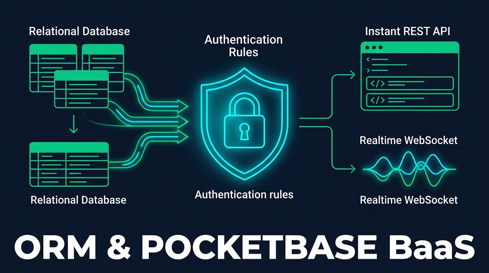
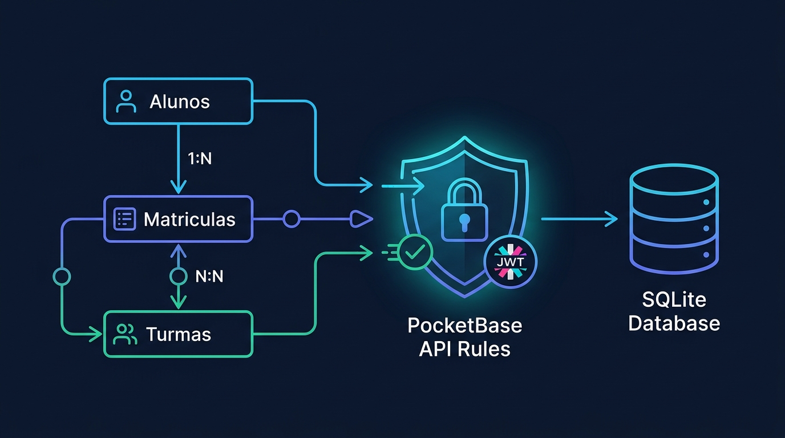
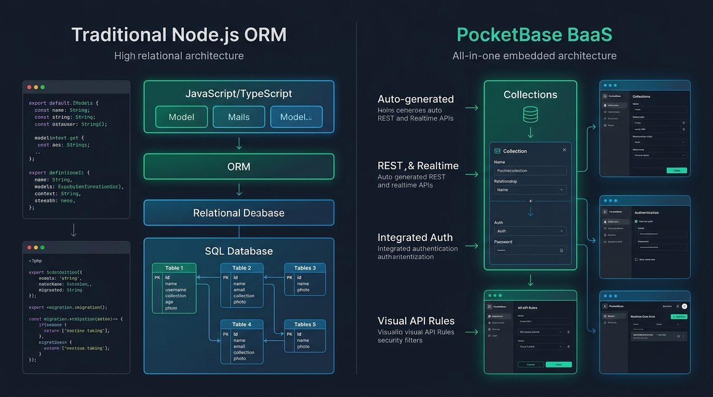
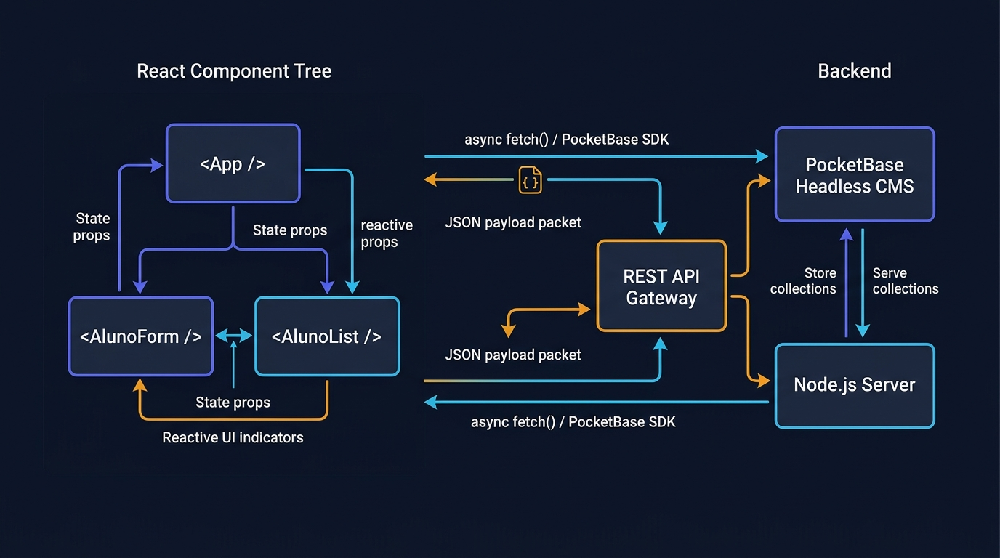
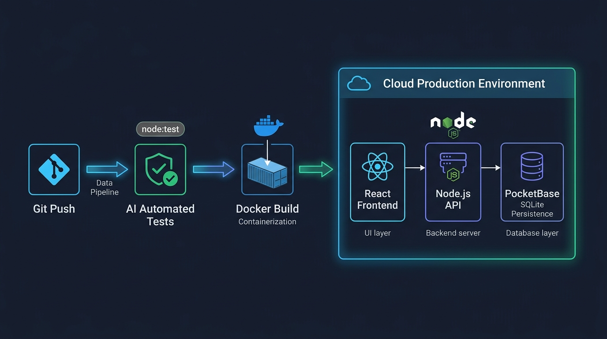

Instituto Federal do Ceará (IFCE) — Campus BaturitéUC17-DWIII • 80h (4 Créditos)
Curso Técnico Subsequente em Informática para Internet (EaD)
Desenvolvimento Web III
Arquitetura Back-end com Node.js, Persistência Low-Code com PocketBase, Interfaces Reativas com JavaScript Vanilla & React e Engenharia Assistida por IA (Vibe Coding & SDD)
Equipe Docente — Eixo de Informação e Comunicação (IFCE Campus Baturité)
Autoria Técnica, Arquitetura de Software Educacional e Design Instrucional EaD
Este livro digital (E-Book) foi concebido e desenvolvido pelo corpo docente da disciplina Desenvolvimento Web III (UC17-DWIII) do Instituto Federal de Educação, Ciência e Tecnologia do Ceará (IFCE) — Campus Baturité, destinado aos discentes do Curso Técnico Subsequente em Informática para Internet na modalidade de Educação a Distância (EaD).
A obra adota pioneiramente a abordagem de Desenvolvimento Orientado a Especificação (Specification-Driven Development — SDD) aliada à tríade contemporânea de engenharia de software: Programação Assistida por IA (Vibe Coding Responsável), Backend-as-a-Service (PocketBase & ORM) e Interfaces Declarativas Reativas (JavaScript Vanilla, React & UI Generativa).
Dados Curriculares Oficiais (PPC / IFCE)
Unidade Curricular: Desenvolvimento Web III (UC17-DWIII)
Sistema de Avaliação e Matriz de Aprovação (ROD / IFCE)
Conforme o Regulamento da Organização Didática (ROD) do IFCE, exige-se frequência mínima obrigatória de 75%. A Média Semestral Parcial (Xs) combina a nota das Atividades a Distância (AD, peso 2) e das Avaliações Presenciais (AP, peso 3):
Xs = (2 × AD + 3 × AP) / 5
• Aprovado por Média: Xs ≥ 6,0 e Frequência ≥ 75%.
• Exame Presencial Final (EFP): 3,0 ≤ Xs < 6,0 → Média Final Xf = (Xs + EFP) / 2 ≥ 5,0.
Arquitetura cliente-servidor com Node.js e JavaScript Vanilla (ES6+), gerenciamento de pacotes npm, padrões MVC/Services/Controllers, construção de APIs RESTful, middlewares, tratamento de exceções HTTP e auditoria crítica de código gerado por IA (Vibe Coding).
Competências-Chave: Compreender a arquitetura orientada a eventos do Node.js e o uso de módulos ES6+ no servidor • Gerenciar dependências e scripts de automação via npm e package.json com auxílio de IA
Aula 01: Introdução ao Node.js, Frameworks Web e Gerenciamento de Pacotes com IA
Banner da Unidade I
1. Objetivos de Aprendizagem
Ao concluir esta aula assíncrona, você será capaz de:
✅ Explicar o funcionamento do runtime Node.js, a engine V8 e o modelo de I/O não bloqueante orientado a eventos (Event Loop).
✅ Diferenciar a escrita de código em JavaScript Vanilla (ES6+) no navegador e no servidor utilizando ES Modules (import / export).
✅ Estruturar um projeto back-end com npm, configurando o manifesto package.json e utilizando Vibe Coding para geração e auditoria de configurações iniciais.
2. Fundamentação Teórica (Markdown)
2.1 Do Navegador ao Servidor: O Ecossistema Node.js
Historicamente, o JavaScript Vanilla nascia restrito ao contexto do navegador para manipulação do DOM. Com a criação do Node.js sobre a engine V8 (do Google Chrome) combinada à biblioteca libuv, o JavaScript consolidou-se como uma linguagem full-stack de alta performance para servidores Web e APIs RESTful.
Diferente de servidores tradicionais que alocam uma thread pesada do sistema operacional para cada requisição HTTP recebida, o Node.js opera sob o modelo Single-Threaded Event Loop com I/O assíncrono não bloqueante:
1. A requisição HTTP chega ao Event Loop.
2. Operações custosas de entrada/saída (consulta ao banco SQLite/PocketBase, leitura de arquivos ou chamadas de rede) são delegadas de forma assíncrona (Promises e async/await).
3. O processo principal continua livre para atender centenas de outros clientes simultaneamente.
2.2 Frameworks Web em Node.js e Gerenciamento de Pacotes (npm)
Embora o módulo nativo node:http forneça toda a base de rede para criar servidores Web sem dependências externas, frameworks minimalistas (como Express e Fastify) adicionam camadas ergonômicas de roteamento, middlewares e serialização JSON.
O Node Package Manager (npm) centraliza a gestão de bibliotecas por meio do arquivo package.json. Na abordagem moderna adotada nesta disciplina, ativamos o suporte nativo a ES Modules definindo "type": "module", o que unifica a sintaxe import/export entre o back-end Node.js e o front-end React.
2.3 Vibe Coding no Setup Arquitetural
No paradigma de Desenvolvimento Orientado a Especificação (SDD) e Vibe Coding, o desenvolvedor não perde tempo memorizando flags obscuras de configuração: ele especifica requisitos técnicos claros (versão da engine Node, scripts de execução com --watch, política de módulos ES6 e dependências estritamente necessárias) e audita o artefato gerado pela IA.
3. Atividade Prática Guiada (Hands-on)
Passo 1: Prompt de Especificação para Inicialização do Projeto (Vibe Coding)
Utilize o seguinte prompt estruturado no seu assistente de código (Cursor, GitHub Copilot ou Gemini Code Assist):
TEXT
[SPEC-PROMPT]: Gere um arquivo package.json para uma API acadêmica do IFCE Campus Baturité em Node.js 20+, utilizando ES Modules ("type": "module"), sem dependências externas desnecessárias, contendo scripts para desenvolvimento com live-reload nativo (--watch) e execução de testes nativos (node --test). Em seguida, crie um módulo utilitário src/infoSistema.js em JavaScript Vanilla que retorne metadados da plataforma e um servidor HTTP básico em src/index.js.
Passo 2: Implementação e Inspeção do Código Gerado
JAVASCRIPT
// src/infoSistema.js — Módulo ES6+ em JavaScript Vanilla
import os from 'node:os';
export function obterStatusServidor() {
return {
instituicao: 'IFCE Campus Baturité',
disciplina: 'Desenvolvimento Web III (UC17-DWIII)',
runtime: `Node.js ${process.version}`,
plataforma: `${os.type()} (${os.arch()})`,
memoriaLivreMB: Math.round(os.freemem() / (1024 * 1024)),
timestamp: new Date().toISOString()
};
}
JAVASCRIPT
// src/index.js — Servidor HTTP Nativo em Node.js
import http from 'node:http';
import { obterStatusServidor } from './infoSistema.js';
const PORT = process.env.PORT || 3000;
const server = http.createServer((req, res) => {
if (req.method === 'GET' && req.url === '/status') {
res.writeHead(200, { 'Content-Type': 'application/json; charset=utf-8' });
res.end(JSON.stringify(obterStatusServidor(), null, 2));
return;
}
res.writeHead(404, { 'Content-Type': 'application/json; charset=utf-8' });
res.end(JSON.stringify({ erro: 'Rota não encontrada' }));
});
server.listen(PORT, () => {
console.log(`Servidor ativo em http://localhost:${PORT}/status`);
});
Passo 3: Teste de Validação
Execute o comando abaixo no terminal e valide se o JSON retornado apresenta o código HTTP 200 e a versão do Node.js:
Competências-Chave: Configurar ambiente de desenvolvimento profissional com Node.js LTS, Git e variáveis de ambiente (.env) • Inspecionar o ciclo completo de Requisição e Resposta HTTP (Headers, Query Params, Body e Status Codes)
Aula 02: Configuração de Ambiente Node.js e Arquitetura Web na Prática (Laboratório)
Fluxo Vibe Coding no Back-end
1. Objetivos de Aprendizagem
Ao concluir este laboratório presencial, você será capaz de:
✅ Configurar o ambiente de desenvolvimento local com Node.js LTS, suporte nativo a arquivos .env (--env-file) e cliente de teste de APIs.
✅ Implementar o roteamento básico e a leitura de streams de dados JSON em requisições POST usando JavaScript Vanilla no Node.js.
✅ Diagnosticar cabeçalhos HTTP (Headers), códigos de status e tempos de resposta em chamadas locais.
2. Fundamentação Teórica (Markdown)
2.1 Anatomia do Protocolo HTTP na Arquitetura Cliente-Servidor
Toda comunicação entre um front-end (seja em JavaScript Vanilla ou React) e um back-end (Node.js ou PocketBase) fundamenta-se na troca de mensagens HTTP:
Request (Requisição): Composta pelo Método/Verbo (GET, POST, PUT, PATCH, DELETE), URI (/cursos?turno=noite), Headers (Content-Type: application/json, Authorization: Bearer ...) e Body (carga útil serializada em JSON).
Response (Resposta): Composta pelo Status Code (200 OK, 201 Created, 400 Bad Request, 404 Not Found, 500 Internal Server Error), Headers de resposta (incluindo políticas de CORS) e Body de retorno.
2.2 Variáveis de Ambiente Nativas no Node.js
Boas práticas de engenharia de software (12-Factor App) determinam que portas de rede, chaves secretas e URLs do PocketBase jamais devem ser escritas diretamente no código-fonte (hardcoded). A partir do Node.js 20.6+, carregamos variáveis diretamente sem pacotes externos usando a flag --env-file=.env.
3. Atividade Prática Guiada (Hands-on)
Passo 1: Especificação de Parser JSON Assíncrono com Vibe Coding
Solicite ao assistente de IA a criação de uma função utilitária para ler o corpo (stream) de uma requisição HTTP em Node.js puro com limite de tamanho contra ataques de sobrecarga:
TEXT
[SPEC-PROMPT]: Escreva uma função assíncrona lerBodyJson(req) em Node.js puro (JavaScript ES6+) que colete os chunks da requisição HTTP, aplique um limite de segurança de 1MB e faça o JSON.parse, lançando um erro com statusCode 400 caso o JSON seja inválido.
Passo 2: Código de Referência do Laboratório
JAVASCRIPT
// src/httpParser.js — Leitura Segura de Stream JSON em Node.js
export async function lerBodyJson(req, limiteBytes = 1024 * 1024) {
return new Promise((resolve, reject) => {
let dados = '';
let bytesRecebidos = 0;
req.on('data', (chunk) => {
bytesRecebidos += chunk.length;
if (bytesRecebidos > limiteBytes) {
const erro = new Error('Payload excede o limite máximo de 1MB.');
erro.statusCode = 413;
reject(erro);
req.destroy();
return;
}
dados += chunk.toString('utf-8');
});
req.on('end', () => {
if (!dados) return resolve({});
try {
resolve(JSON.parse(dados));
} catch {
const erro = new Error('Formato JSON malformado no corpo da requisição.');
erro.statusCode = 400;
reject(erro);
}
});
req.on('error', reject);
});
}
Passo 3: Teste de Validação no Laboratório
Teste o parser enviando um JSON válido e um JSON malformado via curl ou script de teste para verificar o retorno exato do código 400 Bad Request.
Competências-Chave: Desacoplar aplicações Node.js em camadas de Rotas, Controllers, Services e Models/Schemas • Aplicar Scaffolding assistido por IA para gerar controladores coesos e testáveis
Aula 03: Padrões de Arquitetura Back-end (MVC/Controllers) e Scaffolding com Vibe Coding
Infográfico Código Manual vs Vibe Coding
1. Objetivos de Aprendizagem
Ao concluir este encontro síncrono, você será capaz de:
✅ Estruturar um projeto back-end Node.js separando responsabilidades entre Routes, Controllers, Services e Models.
✅ Elaborar especificações de Scaffolding para assistentes de IA gerarem controladores padronizados sem misturar regras de negócio com manipulação de HTTP.
✅ Refatorar um código monolítico em camadas modulares em JavaScript ES6+.
2. Fundamentação Teórica (Markdown)
2.1 O Padrão MVC e Arquitetura em Camadas para APIs REST
No desenvolvimento tradicional com renderização no servidor, o padrão MVC (Model-View-Controller) dividia a aplicação em Dados (Model), Tela HTML (View) e Controle (Controller). Em arquiteturas modernas onde a View é um front-end desacoplado em React ou JavaScript Vanilla, adaptamos o MVC no Node.js para três camadas essenciais:
1.Controller (Controlador HTTP): Recebe req e res, extrai parâmetros, aciona o Service e devolve o status HTTP adequado.
2.Service (Regra de Negócio): Aplica validações acadêmicas (ex.: verificar se o aluno já possui matrícula ativa) de forma independente do protocolo HTTP.
3.Repository / Model (Persistência): Comunica-se com o banco de dados em memória, ORM ou PocketBase.
2.2 Scaffolding Acelerado com Vibe Coding
Quando pedimos a uma IA apenas "crie uma API de alunos", ela tende a gerar um único arquivo gigante difícil de manter. No Vibe Coding orientado a especificação, instruímos explicitamente a arquitetura em camadas desejada.
3. Atividade Prática Guiada (Hands-on)
Passo 1: Prompt de Scaffolding em Camadas
TEXT
[SPEC-PROMPT]: Gere um Service (AlunoService) e um Controller (AlunoController) em JavaScript ES6+ para Node.js seguindo o princípio da responsabilidade única. O AlunoService deve validar matrícula de 10 dígitos e nome mínimo de 3 letras, impedindo duplicidades. O AlunoController deve apenas traduzir chamadas HTTP em invocações ao Service.
Competências-Chave: Auditar códigos JavaScript/Node.js gerados por IA identificando falhas de segurança e bloqueio do Event Loop • Corrigir vulnerabilidades de validação, tratamento de Promises e exposição de dados sensíveis
Aula 04: Estudo Dirigido: Análise Crítica e Auditoria de Código Node.js Gerado por IA
Infográfico Auditoria de Código
1. Objetivos de Aprendizagem
Ao concluir este estudo dirigido assíncrono, você será capaz de:
✅ Detectar os 5 antipadrões mais comuns gerados por modelos de IA em aplicações Node.js (bloqueio síncrono de I/O, falta de try/catch em funções assíncronas, pacotes alucinados, eval() e vazamento de stack trace).
✅ Refatorar trechos defeituosos aplicando programação defensiva em JavaScript Vanilla.
✅ Aplicar um checklist de auditoria SDD antes de aceitar sugestões de assistentes de código.
2. Fundamentação Teórica (Markdown)
2.1 Por que Auditar Código Gerado por IA?
No paradigma de Vibe Coding, a velocidade de geração aumenta exponencialmente, mas a responsabilidade técnica permanece 100% humana. Assistentes de IA treinados em repositórios públicos frequentemente reproduzem práticas obsoletas ou inseguras em Node.js:
1.Bloqueio do Event Loop: Uso de fs.readFileSync dentro de rotas HTTP, travando todas as requisições concorrentes.
2.Alucinação de Pacotes (Package Hallucination): Sugestão de bibliotecas inexistentes ou depreciadas no npm.
3.Ausência de Sanitização e Tipagem: Confiar cegamente em req.body sem validar tipos primitivos (typeof, expressões regulares).
4.Exposição de Stack Trace: Retornar err.stack diretamente ao cliente em produção.
3. Atividade Prática Guiada (Hands-on)
Passo 1: Cenário de Auditoria (Código Vulnerável vs. Código Auditado)
Analise o código problemático abaixo (frequentemente sugerido por prompts vagos) e compare-o com a versão refatorada:
JAVASCRIPT
// ❌ CÓDIGO VULNERÁVEL (NÃO UTILIZAR EM PRODUÇÃO)
import fs from 'node:fs';
export function rotaInseguraBuscarAluno(req, res) {
// Problema 1: Bloqueia o Event Loop inteiro lendo disco de forma síncrona
const raw = fs.readFileSync('./alunos.json', 'utf-8');
const alunos = JSON.parse(raw);
// Problema 2: Uso perigoso de eval() / sem validação de entrada
const filtro = eval(req.SearchQuery);
res.end(JSON.stringify(alunos.filter(filtro)));
}
JAVASCRIPT
// ✅ CÓDIGO AUDITADO E REFATORADO (PADRÃO SDD DWIII)
import fs from 'node:fs/promises';
export async function rotaSeguraBuscarAluno(termoMatricula) {
// 1. Validação estrita de entrada com Regex (apenas dígitos)
const matriculaLimpa = String(termoMatricula ?? '').trim();
if (!/^\d{1,10}$/.test(matriculaLimpa)) {
const err = new Error('Parâmetro de busca inválido. Informe apenas números.');
err.statusCode = 400;
throw err;
}
// 2. Leitura assíncrona não bloqueante com fs/promises
const raw = await fs.readFile(new URL('./alunos.json', import.meta.url), 'utf-8');
const alunos = JSON.parse(raw);
// 3. Comparação segura sem execução dinâmica de código
return alunos.filter((a) => String(a.matricula).startsWith(matriculaLimpa));
}
Passo 2: Checklist de Validação do Estudo Dirigido
Sempre execute os 3 questionamentos de auditoria antes de fazer commit:
1. Todas as operações de I/O utilizam async/await ou Promises?
2. Todos os dados vindos do usuário passam por validação explícita de tipo e formato?
3. As dependências importadas são nativas do Node.js (node:*) ou estritamente homologadas no package.json?
Competências-Chave: Projetar endpoints semânticos seguindo as restrições REST e os códigos de status HTTP corretos • Implementar pipeline de Middlewares e tratamento centralizado de exceções em Node.js
Aula 05: Arquitetura RESTful, Verbos HTTP, Middlewares e Tratamento de Exceções
Diagrama REST e Error Handling
1. Objetivos de Aprendizagem
Ao concluir esta aula síncrona, você será capaz de:
✅ Mapear operações CRUD aos verbos HTTP semânticos (GET, POST, PUT, PATCH, DELETE) e códigos de status (200, 201, 204, 400, 404, 422, 500).
✅ Construir funções de Middleware (logging, CORS e autenticação) no fluxo de requisição Node.js.
✅ Padronizar respostas de erro JSON com classes customizadas (HttpError) e tratador global de exceções.
2. Fundamentação Teórica (Markdown)
2.1 Semântica RESTful e Idempotência
Uma API verdadeiramente RESTful utiliza substantivos no plural para identificar recursos (/alunos, /turmas) e delega a ação ao verbo HTTP:
Verbo HTTP
Rota Exemplo
Ação Semântica
Idempotente?
Status de Sucesso
GET
/alunos
Listar todos os discentes
Sim
200 OK
GET
/alunos/:matricula
Buscar discente específico
Sim
200 OK (ou 404)
POST
/alunos
Cadastrar novo discente
Não
201 Created
PUT / PATCH
/alunos/:matricula
Atualizar cadastro do discente
Sim
200 OK
DELETE
/alunos/:matricula
Remover registro acadêmico
Sim
200 OK / 204 No Content
2.2 Tratamento Centralizado de Exceções (HttpError)
Em vez de espalhar blocos res.writeHead(400)... por dezenas de funções, criamos uma classe HttpError extends Error que carrega o statusCode e os detalhes do erro, capturando qualquer falha em um único bloco try / catch de alto nível no servidor.
3. Atividade Prática Guiada (Hands-on)
Passo 1: Especificação de Tratador Global de Erros e CORS via Vibe Coding
TEXT
[SPEC-PROMPT]: Crie em JavaScript ES6+ uma classe HttpError(statusCode, message, details) e um wrapper de servidor HTTP em Node.js que configure cabeçalhos CORS para o front-end React e capture qualquer exceção assíncrona retornando um JSON padronizado { erro, statusCode, timestamp }.
Passo 2: Implementação de HttpError e Middleware Handler
Verifique se uma exceção throw new HttpError(422, 'Matrícula inválida') é automaticamente convertida em uma resposta HTTP 422 Unprocessable Entity com cabeçalhos CORS ativos.
Competências-Chave: Construir uma API RESTful completa em Node.js com operações CRUD, filtros e validações • Executar testes automatizados de validação dos endpoints da Unidade I
Aula 06: Resolução de Exercícios Práticos Virtuais de Construção de APIs REST em Node.js
Diagrama Workflow API REST Node.js
1. Objetivos de Aprendizagem
Ao concluir esta atividade prática de consolidação da Unidade I, você será capaz de:
✅ Implementar a API completa de Gestão de Alunos da disciplina DWIII (GET, POST, DELETE) em Node.js.
✅ Integrar validação de schemas, códigos HTTP (200, 201, 400, 404, 422) e respostas padronizadas em JSON.
✅ Validar todos os cenários de sucesso e de erro por meio do script executável em src/code-samples/u1-node-api/server.js.
2. Fundamentação Teórica (Markdown)
2.1 Consolidação da Arquitetura Back-end na Unidade I
Ao longo das 5 aulas anteriores, evoluímos do entendimento do runtime Node.js e do JavaScript Vanilla (ES6+) para a construção de serviços desacoplados com tratamento de exceções HTTP e auditoria de código gerado por IA.
Nesta atividade prática de 6 horas, consolidamos a API de Gestão de Alunos (DWIII), que servirá de base para a persistência relacional e BaaS (PocketBase) na Unidade II e para o consumo pelo front-end React na Unidade III.
3. Atividade Prática Guiada (Hands-on)
Passo 1: Especificação Completa da API de Alunos (Vibe Coding SDD)
TEXT
[SPEC-PROMPT]: Implemente um módulo completo em Node.js (src/code-samples/u1-node-api/server.js) contendo o repositório em memória, validador de AlunoSchema (nome >= 3 caracteres, matrícula com 10 dígitos numéricos e curso padrão "Técnico em Informática para Internet"), funções CRUD (criarAluno, listarAlunos, buscarAlunoPorMatricula, removerAluno) e um servidor HTTP RESTful com suporte a CORS e tratamento de exceções HTTP 400, 404 e 422.
Passo 2: Implementação Completa da API (src/code-samples/u1-node-api/server.js)
JAVASCRIPT
// Exemplo consolidado da Unidade I (disponível em src/code-samples/u1-node-api/server.js)
export class ApiAlunosNode {
constructor() {
this.dbAlunos = new Map();
}
validarAluno(payload) {
if (!payload || typeof payload.nome !== 'string' || payload.nome.trim().length < 3) {
const err = new Error('Nome do discente deve possuir no mínimo 3 caracteres.');
err.statusCode = 422;
throw err;
}
if (!/^\d{10}$/.test(String(payload.matricula ?? ''))) {
const err = new Error('Matrícula inválida: informe exatamente 10 dígitos numéricos.');
err.statusCode = 422;
throw err;
}
return {
id: this.dbAlunos.size + 1,
nome: payload.nome.trim(),
matricula: String(payload.matricula),
curso: payload.curso || 'Técnico em Informática para Internet'
};
}
criarAluno(payload) {
const aluno = this.validarAluno(payload);
if (this.dbAlunos.has(aluno.matricula)) {
const err = new Error('Matrícula já cadastrada no sistema acadêmico.');
err.statusCode = 400;
throw err;
}
this.dbAlunos.set(aluno.matricula, aluno);
return { statusCode: 201, body: { mensagem: 'Aluno cadastrado com sucesso', dados: aluno } };
}
}
Passo 3: Exercícios de Validação Obrigatórios (Entrega no Moodle)
1.Cenário 1 (Sucesso 201): Cadastre um discente com matrícula "2026100123" e verifique o retorno JSON.
2.Cenário 2 (Duplicidade 400): Tente recadastrar a mesma matrícula "2026100123" e confirme a exceção HTTP 400.
3.Cenário 3 (Validação 422): Envie uma matrícula com letras ("2026ABC"), confirmando o bloqueio pelo validador de schema.
Impedância objeto-relacional, modelagem de entidades e relacionamentos (1:1, 1:N, N:N), geração de Migrations e Seeds, integração com PocketBase BaaS (SQLite embutido, Collections, Auth JWT, Realtime), otimização de queries (expand vs N+1) e segurança declarativa com API Rules.
Competências-Chave: Compreender o problema da impedância objeto-relacional entre objetos JavaScript e tabelas SQL • Mapear entidades de domínio acadêmico utilizando modelos declarativos em Node.js
Aula 01: Conceitos Fundamentais de ORM em Node.js e Abstração de Entidades

Banner da Unidade II
1. Objetivos de Aprendizagem
Ao concluir esta aula assíncrona, você será capaz de:
✅ Explicar o conceito de Object-Relational Impedance Mismatch (Impedância Objeto-Relacional) entre objetos JavaScript em memória e bancos relacionais SQL (SQLite/PostgreSQL).
✅ Modelar entidades do domínio escolar como classes e schemas tipados em Node.js.
2. Fundamentação Teórica (Markdown)
2.1 Da Memória Volátil à Persistência Relacional
Na Unidade I, armazenamos os discentes em estruturas Map na memória RAM do processo Node.js. Caso o servidor reinicie, todos os dados são perdidos. Para garantir durabilidade (ACID: Atomicidade, Consistência, Isolamento e Durabilidade), utilizamos Sistemas Gerenciadores de Banco de Dados Relacionais (SGBDs), como SQLite (embutido no próprio PocketBase e no Node.js moderno) e PostgreSQL.
2.2 O Papel do ORM (Object-Relational Mapping)
Enquanto o código em Node.js / JavaScript manipula grafos de objetos dinâmicos, propriedades aninhadas e arrays, o banco relacional opera sobre tuplas (linhas), colunas tipadas e chaves estrangeiras. O ORM atua como uma camada tradutora que:
1. Converte operações de métodos JavaScript (AlunoModel.create(), AlunoModel.findMany()) em instruções SQL parametrizadas seguras contra SQL Injection.
2. Hidrata as linhas retornadas pelo banco em objetos JavaScript prontos para serialização JSON.
3. Atividade Prática Guiada (Hands-on)
Passo 1: Prompt de Especificação de Entidade ORM em Node.js
TEXT
[SPEC-PROMPT]: Gere uma classe de repositório ORM leve em JavaScript ES6+ que abstraia uma tabela SQL "alunos" (id, nome, matricula, curso, ativo, criado_em), gerando queries SQL parametrizadas seguras (Prepared Statements) e hidratando os registros para objetos camelCase.
Passo 2: Implementação de Abstração de Entidade Relacional
Verifique como AlunoEntity.toSqlInsert() separa a string SQL (?) do vetor de parâmetros (params), eliminando qualquer risco de concatenação maliciosa (SQL Injection).
Competências-Chave: Definir chaves primárias (PK), chaves estrangeiras (FK) e restrições de unicidade (UNIQUE) • Modelar relacionamentos 1:1, 1:N e N:N entre Cursos, Turmas, Alunos e Matrículas
Aula 02: Mapeamento de Atributos, Chaves e Relacionamentos no ORM

Diagrama Relacionamentos e Regras
1. Objetivos de Aprendizagem
Ao concluir esta aula síncrona, você será capaz de:
✅ Especificar restrições de coluna (PRIMARY KEY, FOREIGN KEY, UNIQUE, NOT NULL, DEFAULT) em schemas de banco de dados.
✅ Implementar associações Um-para-Muitos (1:N) e Muitos-para-Muitos (N:N) com tabela associativa (matriculas_turmas).
✅ Configurar políticas de integridade referencial (ON DELETE CASCADE vs. RESTRICT).
2. Fundamentação Teórica (Markdown)
2.1 Cardinalidade e Integridade Referencial no Domínio Acadêmico
Em um sistema acadêmico real do IFCE, as entidades não existem isoladas:
Relacionamento 1:N (Um para Muitos): Um Curso (cursos) possui várias Turmas (turmas), mas cada turma pertence a um único curso principal via chave estrangeira curso_id.
Relacionamento N:N (Muitos para Muitos): Um Aluno pode cursar várias Disciplinas/Turmas, e uma Turma contém vários Alunos. Essa relação é resolvida pela entidade associativa Matrícula (matriculas), que armazena também os atributos próprios do vínculo (nota_ad, nota_ap, frequencia).
3. Atividade Prática Guiada (Hands-on)
Passo 1: Prompt de Especificação de Relacionamentos SQL/ORM
TEXT
[SPEC-PROMPT]: Gere o schema DDL relacional (compatível com SQLite / PocketBase) e a representação em objetos JavaScript para as tabelas cursos, alunos e matriculas, garantindo chaves estrangeiras e restrição UNIQUE composta para impedir que o mesmo aluno se matricule duas vezes na mesma disciplina.
Passo 2: Schema Relacional Declarativo
JAVASCRIPT
// src/orm/schemaRelacional.js
export const DDL_SISTEMA_ACADEMICO = `
CREATE TABLE IF NOT EXISTS cursos (
id TEXT PRIMARY KEY,
codigo TEXT NOT NULL UNIQUE,
nome TEXT NOT NULL
);
CREATE TABLE IF NOT EXISTS alunos (
id TEXT PRIMARY KEY,
nome TEXT NOT NULL,
matricula TEXT NOT NULL UNIQUE,
curso_id TEXT NOT NULL,
FOREIGN KEY (curso_id) REFERENCES cursos(id) ON DELETE RESTRICT
);
CREATE TABLE IF NOT EXISTS matriculas_disciplinas (
id TEXT PRIMARY KEY,
aluno_id TEXT NOT NULL,
disciplina_codigo TEXT NOT NULL,
nota_ad REAL DEFAULT 0,
nota_ap REAL DEFAULT 0,
frequencia REAL DEFAULT 100,
UNIQUE(aluno_id, disciplina_codigo),
FOREIGN KEY (aluno_id) REFERENCES alunos(id) ON DELETE CASCADE
);
`;
Passo 3: Teste de Validação
Analise a cláusula UNIQUE(aluno_id, disciplina_codigo) e explique como o próprio motor do banco de dados impede matrículas duplicadas mesmo sob requisições concorrentes.
Competências-Chave: Versionar a evolução estrutural do banco de dados usando scripts de Migration (up e down) • Automatizar a carga inicial de dados de teste (Database Seeding) com Node.js e IA
Aula 03: Modelagem e Geração Automática de Migrações (Migrations)

Infográfico ORM e Migrations vs PocketBase
1. Objetivos de Aprendizagem
Ao concluir esta aula assíncrona, você será capaz de:
✅ Explicar por que alterações manuais em bancos de produção são proibidas em equipes profissionais de engenharia de software.
✅ Escrever scripts de migração reversíveis (up para aplicar mudanças e down para reverter/rollback) em JavaScript/Node.js.
✅ Implementar scripts de Seed para popular automaticamente o ambiente de desenvolvimento.
2. Fundamentação Teórica (Markdown)
2.1 O que são Database Migrations?
Assim como o Git controla o histórico de alterações do código-fonte JavaScript, as Migrations (Migrações) controlam o histórico evolutivo do esquema do banco de dados. Tanto em ORMs tradicionais do ecossistema Node.js (Prisma Migrate, Knex, Drizzle Kit) quanto internamente no PocketBase (pb_migrations), cada alteração estrutural é gravada em um arquivo datado contendo duas funções:
up(db): Aplica a evolução (ex.: cria a coleção/tabela projetos ou adiciona a coluna github_url).
down(db): Desfaz a alteração com segurança caso um deploy apresente falhas.
3. Atividade Prática Guiada (Hands-on)
Passo 1: Especificação de Migration Compatível com Node.js / PocketBase
TEXT
[SPEC-PROMPT]: Gere uma estrutura de migração em JavaScript (padrão up/down) que adicione o campo "github_repo" e "nota_final" na coleção/tabela de alunos, acompanhada de uma função de seed que insira 3 discentes de exemplo do IFCE Campus Baturité.
Competências-Chave: Compreender a arquitetura do PocketBase (SQLite embutido, Collections, Auth e Realtime SSE) • Integrar aplicações Node.js e JavaScript Vanilla ao PocketBase via SDK oficial e REST API
Aula 04: Automação de Scripts de Banco de Dados e Introdução ao BaaS com PocketBase
Infográfico ORM vs PocketBase BaaS
1. Objetivos de Aprendizagem
Ao concluir esta aula assíncrona, você será capaz de:
✅ Comparar a construção tradicional de back-end + ORM com a abordagem Backend-as-a-Service (BaaS) utilizando PocketBase.
✅ Configurar coleções (Base, Auth e View) no painel administrativo do PocketBase (http://127.0.0.1:8090/_/).
✅ Consumir os endpoints RESTful gerados automaticamente pelo PocketBase usando JavaScript Vanilla / Node.js.
2. Fundamentação Teórica (Markdown)
2.1 Por que PocketBase revolucionou o Desenvolvimento Low-Code / BaaS?
O PocketBase é um Backend-as-a-Service open-source distribuído em um único executável leve que entrega instantaneamente:
1.Banco de Dados SQLite Embutido (modo WAL): Altíssima performance de leitura e escrita sem necessidade de configurar servidores pesados de banco de dados.
2.REST API Automática: Ao criar uma coleção alunos, o PocketBase disponibiliza imediatamente endpoints prontos para paginação, ordenação, filtragem e CRUD (/api/collections/alunos/records).
3.Autenticação Nativa (JWT + OAuth2): Coleções do tipo Auth gerenciam cadastro de usuários, hash de senhas (bcrypt) e emissão de tokens JWT sem escrever boilerplate.
4.Assinaturas em Tempo Real (Realtime via Server-Sent Events): O front-end em React ou JS Vanilla pode escutar mudanças na tabela instantaneamente.
3. Atividade Prática Guiada (Hands-on)
Passo 1: Prompt de Especificação de Cliente PocketBase em JS/Node.js
TEXT
[SPEC-PROMPT]: Crie um cliente JavaScript modular (PocketBaseClient) que se comunique com a REST API padrão do PocketBase (/api/collections/alunos/records), suportando listagem paginada com filtros, criação de registro e simulação local para testes automatizados offline.
Passo 2: Implementação de Integração com PocketBase
JAVASCRIPT
// Exemplo de consumo da API REST do PocketBase em JavaScript Vanilla / Node.js
export class PocketBaseAlunosService {
constructor(baseUrl = 'http://127.0.0.1:8090') {
this.baseUrl = baseUrl;
}
montarUrlColecao(colecao = 'alunos', params = {}) {
const url = new URL(`/api/collections/${colecao}/records`, this.baseUrl);
for (const [chave, valor] of Object.entries(params)) {
if (valor !== undefined && valor !== null) {
url.searchParams.set(chave, String(valor));
}
}
return url.toString();
}
async listarAlunos({ page = 1, perPage = 20, filter = '' } = {}, fetchFn = fetch) {
const endpoint = this.montarUrlColecao('alunos', { page, perPage, filter, sort: '-created' });
const resposta = await fetchFn(endpoint, {
headers: { 'Content-Type': 'application/json' }
});
if (!resposta.ok) {
throw new Error(`Falha ao consultar PocketBase: HTTP ${resposta.status}`);
}
return resposta.json();
}
}
Passo 3: Teste de Validação
Inspecione a URL gerada por montarUrlColecao('alunos', { page: 1, perPage: 10, filter: 'ativo=true' }) e confirme que segue exatamente o contrato /api/collections/alunos/records?page=1&perPage=10&filter=ativo%3Dtrue&sort=-created.
Competências-Chave: Construir uma camada híbrida onde o Node.js orquestra regras de negócio complexas e persiste dados no PocketBase • Realizar a 1ª Atividade Avaliativa Prática Presencial integrando validação, cálculo acadêmico ROD/IFCE e persistência
Ao concluir este laboratório presencial avaliativo (AP1), você será capaz de:
✅ Integrar um serviço Node.js a uma coleção persistente do PocketBase.
✅ Implementar a regra oficial de cálculo da Média Semestral Parcial ($X_S = \frac{2 \cdot AD + 3 \cdot AP}{5}$) do ROD/IFCE antes de gravar o boletim do aluno no banco.
✅ Demonstrar operações completas de criação, consulta filtrada e atualização de notas com persistência real.
2. Fundamentação Teórica (Markdown)
2.1 Arquitetura Híbrida: Quando usar PocketBase direto vs. Node.js + PocketBase?
Em aplicações reais:
Operações CRUD diretas (listar cursos, exibir perfil do aluno) podem ser consumidas diretamente do PocketBase pelo front-end React, protegidas pelas API Rules.
Regras de negócio críticas ou integrações externas (cálculo oficial de médias segundo o ROD do IFCE, emissão de certificados assinados, disparo de e-mails ou geração de relatórios) são processadas pelo servidor Node.js, que atua como orquestrador confiável e persiste o resultado no PocketBase.
3. Atividade Prática Guiada (Hands-on — 1ª Avaliação Prática)
Passo 1: Especificação do Serviço Avaliativo (ROD/IFCE + PocketBase)
TEXT
[SPEC-PROMPT]: Implemente em JavaScript ES6+ a função calcularMediaSemestralIFCE(notaAD, notaAP, frequenciaPercentual) seguindo a fórmula oficial Xs = (2*AD + 3*AP)/5 do ROD/IFCE, determinando a situação ("APROVADO_POR_MEDIA", "EXAME_FINAL_EFP" ou "REPROVADO") e preparando o registro para persistência na coleção "matriculas" do PocketBase.
Passo 2: Implementação da Regra de Negócio Acadêmica e Persistência
JAVASCRIPT
// src/code-samples/u2-pocketbase-orm/pocketbase-client.js (Trecho da AP1)
export function calcularMediaSemestralIFCE(notaAD, notaAP, frequencia) {
const ad = Number(notaAD);
const ap = Number(notaAP);
const freq = Number(frequencia);
if (Number.isNaN(ad) || ad < 0 || ad > 10 || Number.isNaN(ap) || ap < 0 || ap > 10) {
throw new Error('As notas AD e AP devem estar no intervalo de 0.0 a 10.0.');
}
if (Number.isNaN(freq) || freq < 0 || freq > 100) {
throw new Error('O percentual de frequência deve estar entre 0 e 100.');
}
const mediaXs = Number(((2 * ad + 3 * ap) / 5).toFixed(2));
let situacao = 'REPROVADO';
if (freq < 75) {
situacao = 'REPROVADO_POR_FALTA';
} else if (mediaXs >= 6.0) {
situacao = 'APROVADO_POR_MEDIA';
} else if (mediaXs >= 3.0) {
situacao = 'EXAME_FINAL_EFP';
}
return { notaAD: ad, notaAP: ap, frequencia: freq, mediaXs, situacao };
}
Passo 3: Rubrica de Validação Presencial (AP1)
1. Testar aluno com AD = 8.0, AP = 7.0, Frequência = 85% → Deve resultar em mediaXs = 7.4 e APROVADO_POR_MEDIA.
2. Testar aluno com AD = 5.0, AP = 4.0, Frequência = 80% → Deve resultar em mediaXs = 4.4 e EXAME_FINAL_EFP.
3. Testar aluno com AD = 9.0, AP = 9.0, Frequência = 70% → Deve resultar em REPROVADO_POR_FALTA.
Competências-Chave: Diagnosticar e eliminar o problema de performance de queries N+1 em ORMs e APIs • Utilizar o parâmetro expand e filtros relacionais avançados no PocketBase
Aula 06: Consultas Avançadas, Joins/Expand e Performance no ORM e PocketBase auxiliados por IA
Diagrama Consultas e Relacionamentos
1. Objetivos de Aprendizagem
Ao concluir esta aula síncrona, você será capaz de:
✅ Identificar e resolver a anomalia de performance conhecida como Problema da Query N+1.
✅ Construir consultas relacionais eficientes utilizando JOIN no ORM e o operador expand no PocketBase.
✅ Otimizar buscas utilizando índices (CREATE INDEX) e paginação baseada em limites (page / perPage).
2. Fundamentação Teórica (Markdown)
2.1 O Problema Clássico de Performance N+1
Imagine listar 50 matrículas e, dentro de um laço for, disparar uma nova consulta ao banco para descobrir o nome do aluno e o nome do curso de cada matrícula:
1 consulta principal para buscar as 50 matrículas;
+ 50 consultas individuais para buscar cada aluno = 51 viagens de rede ao banco de dados!
2.2 Solução no ORM (JOIN / include) e no PocketBase (expand)
No PocketBase, eliminamos o problema N+1 passando o parâmetro expand=aluno_id,curso_id em uma única requisição HTTP. O PocketBase resolve os relacionamentos internamente no SQLite e já aninha os objetos expandidos dentro da propriedade record.expand.
3. Atividade Prática Guiada (Hands-on)
Passo 1: Prompt de Otimização de Query com Vibe Coding
TEXT
[SPEC-PROMPT]: Escreva uma função em JavaScript que construa parâmetros de consulta avançados para o PocketBase, combinando filtro composto (notas maiores ou iguais a 6 e frequência >= 75), ordenação decrescente por média e expansão automática das relações aluno_id e turma_id (expand) para evitar o problema N+1.
Passo 2: Construtor de Consultas Otimizadas no PocketBase
JAVASCRIPT
// src/orm/queryBuilderPocketBase.js
export function construirQueryAprovados({ cursoCodigo = 'INFO-INT', pagina = 1 } = {}) {
const filtro = `mediaXs >= 6.0 && frequencia >= 75 && turma_id.curso_codigo = "${cursoCodigo}"`;
return {
page: pagina,
perPage: 25,
filter: filtro,
sort: '-mediaXs,created',
expand: 'aluno_id,turma_id' // Evita o problema N+1 trazendo Aluno e Turma na mesma query!
};
}
Passo 3: Teste de Validação
Verifique que a consulta retornada inclui expand: 'aluno_id,turma_id', reduzindo 26 requisições sequenciais para apenas 1 única requisição HTTP.
Competências-Chave: Definir políticas de controle de acesso baseadas em linha (Row-Level Security / API Rules) no PocketBase • Validar permissões de leitura e escrita entre perfis de Discente, Docente e Coordenador
Aula 07: Atividade de Fixação: Mapeamento de Tabelas Complexas e API Rules no PocketBase
Diagrama API Rules e Segurança no PocketBase
1. Objetivos de Aprendizagem
Ao concluir esta atividade assíncrona de fechamento da Unidade II, você será capaz de:
✅ Configurar as 5 regras de acesso (API Rules: listRule, viewRule, createRule, updateRule, deleteRule) em coleções do PocketBase.
✅ Escrever expressões de segurança utilizando o contexto @request.auth.id e @request.auth.role.
✅ Auditar regras de acesso com auxílio de IA para impedir que um estudante altere notas de outros estudantes.
2. Fundamentação Teórica (Markdown)
2.1 Segurança Declarativa no Banco: As API Rules do PocketBase
Por padrão, toda coleção criada no PocketBase vem bloqueada (Admin Only = null), impedindo acessos públicos acidentais. Para liberar o acesso seguro diretamente para o front-end React, configuramos expressões booleanas avaliadas a cada requisição:
O aluno logado vê apenas seu próprio boletim; professores veem todos.
Create / Update
@request.auth.role = "docente" \
\
@request.auth.role = "coordenador"
Apenas docentes ou coordenadores autenticados podem lançar ou alterar notas.
Delete
@request.auth.role = "coordenador"
Somente a coordenação pode excluir registros de matrícula.
3. Atividade Prática Guiada (Hands-on)
Passo 1: Prompt de Especificação de Regras de Segurança no PocketBase
TEXT
[SPEC-PROMPT]: Gere um avaliador em JavaScript que simule a validação das API Rules do PocketBase para a coleção "matriculas", verificando o objeto de contexto auth ({ id, role }) e o registro alvo ({ aluno_id }) para as operações view, update e delete.
Passo 2: Simulador de Avaliação de API Rules em JavaScript
JAVASCRIPT
// src/code-samples/u2-pocketbase-orm/pocketbase-client.js (Validador de API Rules)
export function avaliarRegraAcessoPocketBase(operacao, authUser, registroMatricula) {
if (!authUser || !authUser.id) return false; // Não autenticado
switch (operacao) {
case 'view':
case 'list':
return authUser.role === 'docente' || authUser.role === 'coordenador' || registroMatricula.aluno_id === authUser.id;
case 'create':
case 'update':
return authUser.role === 'docente' || authUser.role === 'coordenador';
case 'delete':
return authUser.role === 'coordenador';
default:
return false;
}
}
Passo 3: Exercício de Fixação
Teste a função avaliarRegraAcessoPocketBase passando um usuário com role: 'discente' tentando executar 'update' no próprio boletim e confirme que o retorno é false (403 Forbidden).
Transição da manipulação imperativa do DOM (JavaScript Vanilla) para interfaces declarativas em React (JSX, Props, useState, useEffect, Estado Derivado), consumo do PocketBase como Headless CMS, prototipagem com UI Generativa (v0 / Figma) e requisições assíncronas.
Competências-Chave: Compreender a evolução da manipulação imperativa do DOM (JS Vanilla) para a UI declarativa em React • Criar componentes funcionais reutilizáveis utilizando JSX, Props e renderização condicional
Aula 01: Do JavaScript Vanilla ao React: Componentes Visuais, Reatividade e Ciclo de Vida
Banner da Unidade III
1. Objetivos de Aprendizagem
Ao concluir esta aula assíncrona, você será capaz de:
✅ Contrastar a manipulação manual de nós do DOM em JavaScript Vanilla (document.querySelector, appendChild) com o modelo declarativo de Virtual DOM do React.
✅ Decompor uma tela do sistema acadêmico em componentes funcionais desacoplados (<HeaderIFCE />, <CardAluno />, <BoletimBadge />).
✅ Transmitir dados de componentes pais para filhos utilizando propriedades imutáveis (props).
2. Fundamentação Teórica (Markdown)
2.1 Paradigma Imperativo (JS Vanilla DOM) vs. Declarativo (React)
Em JavaScript Vanilla, quando um estado muda (por exemplo, um novo discente é cadastrado), o programador precisa descrever passo a passo como localizar o elemento HTML (document.getElementById('lista-alunos')), criar uma nova tag <li>, atribuir classes CSS e anexá-la à árvore DOM. Em sistemas complexos, sincronizar dezenas de elementos visuais manualmente gera bugs de inconsistência de estado.
O React adota a programação declarativa: definimos a interface como uma função pura do estado:
$$\text{UI} = f(\text{state}, \text{props})$$
Sempre que o estado muda, o React recalcula a árvore de componentes na memória e atualiza apenas os nós exatos do DOM que sofreram alteração.
Infográfico JS Vanilla DOM vs React
3. Atividade Prática Guiada (Hands-on)
Passo 1: Prompt de Especificação (Comparativo JS Vanilla vs. React Component)
TEXT
[SPEC-PROMPT]: Gere lado a lado uma função em JavaScript Vanilla que renderiza um card de aluno em HTML e o componente funcional equivalente em React (<CardAluno />), exibindo nome, matrícula, curso e um selo visual colorido conforme a situação acadêmica.
Passo 2: Implementação em JavaScript Vanilla e React
Competências-Chave: Utilizar o PocketBase como Headless CMS para gerenciar avisos, editais e conteúdos dinâmicos do portal • Acelerar a criação de interfaces em React utilizando geradores de UI por IA (v0 / Figma-to-Code)
Aula 02: Soluções de Gerenciamento de Conteúdo (PocketBase Headless CMS) e Prototipagem No-Code (v0 / Figma)

Diagrama React e PocketBase Headless CMS
1. Objetivos de Aprendizagem
Ao concluir esta aula assíncrona, você será capaz de:
✅ Explicar a arquitetura Headless CMS e como o PocketBase substitui sistemas acoplados tradicionais, fornecendo conteúdo rico via JSON e upload de mídias.
✅ Elaborar prompts visuais/estruturais para ferramentas de UI Generativa (v0 / Figma-to-Code) gerarem componentes React acessíveis e responsivos.
✅ Conectar os componentes gerados ao esquema de coleções do PocketBase.
2. Fundamentação Teórica (Markdown)
2.1 O que é um Headless CMS e por que usar o PocketBase?
Em um CMS monolítico tradicional (como WordPress clássico), o painel de administração e os templates de front-end estão fundidos no mesmo servidor. Em uma arquitetura Headless CMS ("Sem Cabeça"), o gerenciador de conteúdo armazena os artigos, editais, banners e arquivos e os expõe puramente via API REST/JSON.
O PocketBase funciona como um Headless CMS perfeito para projetos em React:
Possui campos nativos do tipo Editor (Rich Text HTML), File (com geração automática de thumbnails de imagens como ?thumb=300x200) e Relation.
A coordenação do curso atualiza um edital pelo painel administrativo visual do PocketBase e o portal em React reflete a mudança instantaneamente sem precisar recompilar código!
2.2 UI Generativa (v0, Figma-to-Code e Vibe Coding no Front-end)
Ferramentas de UI Generativa recebem a especificação dos campos de uma coleção do PocketBase e geram imediatamente a árvore de componentes React com layouts em CSS Grid/Flexbox, estados vazios (Empty States) e esqueletos de carregamento (Skeletons).
3. Atividade Prática Guiada (Hands-on)
Passo 1: Prompt para Geração de Componente React (UI Generativa v0)
TEXT
[SPEC-PROMPT]: Gere um componente React <MuralEditaisIFCE /> estilizado em modo escuro que consuma a coleção "editais" do PocketBase (campos: id, titulo, categoria, data_publicacao, anexo_pdf) e construa a URL pública de download do arquivo anexo via /api/files/editais/:id/:filename.
Passo 2: Utilitário de Mídia e Headless CMS para PocketBase + React
Competências-Chave: Gerenciar estado local reativo e efeitos colaterais no React utilizando useState e useEffect • Modelar estados explícitos de interface (loading, data, error) durante chamadas a APIs REST
Aula 03: Integração do Front-end React com APIs RESTful e Gerenciamento de Estado
Diagrama Fluxo React e REST Gateway
1. Objetivos de Aprendizagem
Ao concluir esta aula síncrona, você será capaz de:
✅ Aplicar os hooks essenciais do React (useState e useEffect) para sincronizar a interface com servidores externos (Node.js e PocketBase).
✅ Evitar loops infinitos de renderização compreendendo o array de dependências do useEffect.
✅ Implementar a máquina de estados da interface (idle → loading → success | error).
2. Fundamentação Teórica (Markdown)
2.1 Hooks Fundamentais no React: useState e useEffect
1.useState(valorInicial): Preserva o estado reativo entre renderizações. Ao invocar a função atualizadora (setAlunos(novosAlunos)), o React agenda uma nova renderização da árvore visual.
2.useEffect(efeito, [dependencias]): Executa efeitos colaterais fora do cálculo puro de renderização (como buscar a lista de discentes na API Node.js/PocketBase assim que o componente é montado na tela).
2.2 A Tríade de Estado de Rede (dados, carregando, erro)
Uma interface profissional nunca deixa o usuário diante de uma tela em branco enquanto a rede responde. Todo componente que consome uma API deve gerenciar três variáveis reativas:
carregando (boolean): Exibe um indicador visual (Spinner ou Skeleton).
erro (string | null): Exibe um alerta amigável caso o servidor Node.js ou PocketBase esteja inacessível.
dados (Array): Renderiza a lista ou um aviso de "Nenhum registro encontrado".
3. Atividade Prática Guiada (Hands-on)
Passo 1: Prompt de Especificação de Gerenciador de Estado Reativo
TEXT
[SPEC-PROMPT]: Crie um controlador de estado reativo em JavaScript/React (StoreAlunosReativo) que gerencie o estado { alunos, carregando, erro, filtroCurso }, permitindo buscar dados assíncronos da API e filtrar discentes em tempo real sem mutar o estado original.
Passo 2: Implementação de Gerenciamento de Estado Imutável
Confirme que o reducerAlunos utiliza o operador spread (...estadoAtual) para retornar sempre uma nova referência de objeto, requisito indispensável para que o React detecte a mudança e re-renderize a tela.
Competências-Chave: Executar chamadas HTTP assíncronas (GET, POST, DELETE) com Fetch API nativa e SDK do PocketBase • Implementar formulários controlados em React com validação instantânea e subscrição Realtime
Aula 04: Requisições Assíncronas (fetch / SDK pocketbase) e Manipulação de Estado Reativo
Infográfico JS Vanilla vs Estado Reativo React
1. Objetivos de Aprendizagem
Ao concluir esta aula assíncrona, você será capaz de:
✅ Realizar requisições GET, POST e DELETE utilizando a Fetch API nativa do JavaScript com async/await e AbortController.
✅ Construir formulários controlados (Controlled Components) em React para cadastro de discentes.
✅ Subscrever atualizações em tempo real (Realtime SSE) do PocketBase para atualizar a lista automaticamente quando outro usuário insere dados.
2. Fundamentação Teórica (Markdown)
2.1 Fetch API Nativa vs. SDK Oficial pocketbase
No JavaScript Vanilla e no React moderno, não precisamos instalar bibliotecas legadas para requisições simples: a fetch() API é nativa tanto no navegador quanto no Node.js 18+.
Quando nos conectamos ao PocketBase, podemos usar tanto fetch() direto quanto o SDK leve pocketbase, que adiciona conveniências poderosas como subscrição em tempo real com apenas 3 linhas de código:
JAVASCRIPT
// Escuta qualquer criação ou edição na coleção 'alunos' em tempo real!
pb.collection('alunos').subscribe('*', (evento) => {
console.log('Ação em tempo real:', evento.action, evento.record);
});
3. Atividade Prática Guiada (Hands-on)
Passo 1: Prompt de Especificação de Serviço de Rede e Formulário Controlado
TEXT
[SPEC-PROMPT]: Escreva uma função assíncrona cadastrarAlunoViaFetch(apiUrl, dadosAluno, fetchFn) que envie um POST JSON com tratamento de erro HTTP, e uma função de validação de formulário controlado para React que habilite o botão de envio apenas quando o nome (>=3 letras) e matrícula (10 dígitos) forem válidos.
Passo 2: Implementação de Requisição Assíncrona e Validação Reativa
JAVASCRIPT
// src/code-samples/u3-react-frontend/clienteApiReact.js
export function validarFormularioAluno({ nome = '', matricula = '' }) {
const erros = {};
if (nome.trim().length < 3) {
erros.nome = 'Informe no mínimo 3 caracteres.';
}
if (!/^\d{10}$/.test(String(matricula))) {
erros.matricula = 'A matrícula deve ter exatamente 10 dígitos.';
}
return {
valido: Object.keys(erros).length === 0,
erros
};
}
export async function enviarNovoAlunoFetch(apiUrl, payload, fetchFn = fetch) {
const validacao = validarFormularioAluno(payload);
if (!validacao.valido) {
throw new Error(Object.values(validacao.erros).join(' '));
}
const res = await fetchFn(`${apiUrl}/alunos`, {
method: 'POST',
headers: { 'Content-Type': 'application/json' },
body: JSON.stringify(payload)
});
const dados = await res.json();
if (!res.ok) {
throw new Error(dados.erro || dados.detail || `Erro HTTP ${res.status}`);
}
return dados;
}
Passo 3: Teste de Validação
Teste validarFormularioAluno({ nome: 'Li', matricula: '123' }) e confirme que valido é false antes mesmo de disparar tráfego de rede desnecessário.
Competências-Chave: Construir um Dashboard Acadêmico interativo em React consumindo a API Node.js e o PocketBase • Implementar busca em tempo real, indicadores estatísticos e feedback visual de ações do usuário
Aula 05: Laboratório Prático: Consumo de Dados e Renderização Dinâmica na Interface React
Diagrama Dashboard React e PocketBase
1. Objetivos de Aprendizagem
Ao concluir este laboratório presencial de 4 horas da Unidade III, você será capaz de:
✅ Integrar ponta a ponta o front-end React com a API Node.js e as coleções do PocketBase.
✅ Implementar filtragem instantânea de discentes por nome ou matrícula usando estado derivado.
✅ Calcular e renderizar cartões de indicadores acadêmicos (Total de Alunos, Taxa de Aprovação e Média da Turma).
2. Fundamentação Teórica (Markdown)
2.1 Estado Derivado (Derived State) no React
Um erro comum ao iniciar no React é criar múltiplos useState redundantes (por exemplo, um estado para alunos, outro para alunosFiltrados e outro para totalAprovados). Na arquitetura limpa em React, mantemos na memória apenas a fonte única da verdade (alunos e termoBusca) e calculamos os dados filtrados e as estatísticas dinamicamente durante a renderização.
3. Atividade Prática Guiada (Hands-on)
Passo 1: Prompt de Especificação do Dashboard Acadêmico
TEXT
[SPEC-PROMPT]: Gere o módulo de lógica de apresentação de um Dashboard em React (calcularResumoDashboard e filtrarAlunosReativo) que filtre discentes por nome ou matrícula (case-insensitive) e retorne os KPIs da turma (total, aprovados, em exame final e média geral).
Passo 2: Implementação da Lógica do Dashboard React (src/code-samples/u3-react-frontend/)
JAVASCRIPT
// src/code-samples/u3-react-frontend/dashboardLogica.js
export function filtrarAlunosReativo(alunos = [], termoBusca = '') {
const termo = termoBusca.trim().toLowerCase();
if (!termo) return alunos;
return alunos.filter(
(a) =>
a.nome.toLowerCase().includes(termo) ||
String(a.matricula).includes(termo) ||
(a.curso && a.curso.toLowerCase().includes(termo))
);
}
export function calcularResumoDashboard(alunos = []) {
const total = alunos.length;
if (total === 0) {
return { total: 0, aprovados: 0, emExame: 0, reprovados: 0, mediaTurma: 0 };
}
let somaMedias = 0;
let aprovados = 0;
let emExame = 0;
let reprovados = 0;
for (const aluno of alunos) {
const media = Number(aluno.mediaXs ?? 0);
somaMedias += media;
if (aluno.situacao === 'APROVADO_POR_MEDIA') aprovados++;
else if (aluno.situacao === 'EXAME_FINAL_EFP') emExame++;
else reprovados++;
}
return {
total,
aprovados,
emExame,
reprovados,
mediaTurma: Number((somaMedias / total).toFixed(2))
};
}
Passo 3: Roteiro de Validação em Laboratório
1. Carregar os discentes da API no Dashboard.
2. Digitar parte da matrícula no campo de busca e verificar a atualização instantânea da lista e dos contadores.
3. Cadastrar um novo aluno pelo modal e observar a inserção imediata sem recarregar a página (F5).
Unidade Curricular • Carga Horária: 24h
Unidade IV: Projeto Web Completo, Testes por IA & Deploy na Nuvem
Engenharia Full-Stack orientada a especificação (SDD), fluxos de navegação e rotas protegidas em React, autenticação JWT e segurança OWASP Top 10, padrão BFF, testes automatizados nativos com node:test gerados por IA, containerização Docker, deploy na nuvem e fechamento acadêmico segundo o ROD/IFCE.
Competências-Chave: Especificar Requisitos Funcionais (RF), Requisitos Não-Funcionais (RNF) e Histórias de Usuário • Redigir o documento de especificação técnica (project.spec.md) para guiar o Vibe Coding Full-Stack
Aula 01: Planejamento de Projeto: Escopo e Levantamento de Requisitos com SDD
Banner da Unidade IV
1. Objetivos de Aprendizagem
Ao concluir esta aula síncrona de abertura da Unidade IV, você será capaz de:
✅ Definir o escopo do Projeto Integrador Full-Stack (React + Node.js + PocketBase).
✅ Estruturar Histórias de Usuário (User Stories) com Critérios de Aceitação verificáveis (Given / When / Then).
✅ Elaborar o arquivo project.spec.md que servirá de contexto mestre para os assistentes de IA na geração de código e testes.
2. Fundamentação Teórica (Markdown)
2.1 Por que projetos guiados por IA falham sem uma Especificação Técnica?
Quando equipes iniciam o desenvolvimento pedindo telas e rotas aleatórias para a IA sem um plano arquitetural, os nomes de campos divergem entre o React, o servidor Node.js e as coleções do PocketBase. No Desenvolvimento Orientado a Especificação (SDD), o primeiro entregável do projeto é o contrato formal de dados e requisitos:
1.Entidades e Coleções PocketBase: Definição exata de nomes de campos e tipos.
2.Contratos de Endpoints Node.js: Payloads de entrada, regras de negócio e status HTTP.
3.Critérios de Aceitação: Condições objetivas que serão transformadas em testes automatizados (node:test).
3. Atividade Prática Guiada (Hands-on)
Passo 1: Prompt para Geração de Especificação e Validador de Escopo SDD
TEXT
[SPEC-PROMPT]: Gere um validador de especificação de projeto (validarEscopoProjetoSDD) em JavaScript que verifique se o manifesto do projeto final do estudante contém título, coleções do PocketBase, rotas Node.js, componentes React e pelo menos 3 histórias de usuário com critérios de aceitação.
Passo 2: Validador de Especificação do Projeto Final
JAVASCRIPT
// src/projeto/validadorEscopoProjeto.js
export function validarEscopoProjetoSDD(spec) {
const erros = [];
if (!spec?.titulo || spec.titulo.trim().length < 5) {
erros.push('O projeto deve possuir um título descritivo (mínimo 5 caracteres).');
}
if (!Array.isArray(spec?.colecoesPocketBase) || spec.colecoesPocketBase.length < 2) {
erros.push('Especifique no mínimo 2 coleções relacionadas no PocketBase.');
}
if (!Array.isArray(spec?.componentesReact) || spec.componentesReact.length < 3) {
erros.push('Especifique no mínimo 3 componentes visuais em React.');
}
if (!Array.isArray(spec?.historiasUsuario) || spec.historiasUsuario.length < 3) {
erros.push('Defina pelo menos 3 Histórias de Usuário com critérios de aceitação.');
}
return { aprovado: erros.length === 0, erros };
}
Passo 3: Teste de Validação
Preencha o objeto spec do seu projeto final e execute validarEscopoProjetoSDD(spec) garantindo aprovado: true.
Competências-Chave: Projetar fluxos de navegação SPA (Single Page Application) e rotas protegidas em React • Aplicar heurísticas de usabilidade (Nielsen) e acessibilidade Web (WCAG) em componentes gerados por IA
Aula 02: Modelagem de Interface (UI/UX) e Fluxos de Navegação em React
Banner Full-Stack UI/UX e Deploy
1. Objetivos de Aprendizagem
Ao concluir esta aula assíncrona, você será capaz de:
✅ Mapear a jornada do usuário em uma Single Page Application (SPA) em React (Login → Dashboard → Cadastro → Detalhes).
✅ Implementar proteção de rotas no cliente (Protected Routes), redirecionando usuários não autenticados para a tela de login.
✅ Avaliar a interface segundo as heurísticas de Nielsen (visibilidade do status do sistema, prevenção de erros e contraste visual).
2. Fundamentação Teórica (Markdown)
2.1 Fluxos de Navegação e Rotas Protegidas em React
Em uma aplicação React integrada ao PocketBase, páginas administrativas (como lançamento de notas ou edição de editais) só devem ser renderizadas se houver um token de autenticação válido (pb.authStore.isValid). Caso contrário, o roteador intercepta a navegação e redireciona o usuário para /login.
2.2 Heurísticas de UI/UX Essenciais no Projeto Final
1.Visibilidade do Status do Sistema: Botões de submissão devem exibir "Salvando..." e ficar desabilitados (disabled) durante requisições ao Node.js/PocketBase para evitar cliques duplos.
2.Prevenção de Erros: Confirmação explícita antes de ações destrutivas (DELETE).
3.Acessibilidade Semântica: Uso de tags <main>, <nav>, <label htmlFor="..."> e atributos aria-live para mensagens de erro.
3. Atividade Prática Guiada (Hands-on)
Passo 1: Prompt de Especificação de Guarda de Rotas React
TEXT
[SPEC-PROMPT]: Escreva uma função pura de guarda de navegação resolverRotaNavegacao(rotaDestino, usuarioLogado) em JavaScript/React que proteja rotas administrativas (/admin, /lancamento-notas), exigindo autenticação e perfil adequado, ou redirecionando para /login ou /acesso-negado.
Passo 2: Implementação de Guarda de Rotas (RouteGuard)
Teste resolverRotaNavegacao('/lancamento-notas', { isValid: true, model: { role: 'discente' } }) e confirme o redirecionamento seguro para '/acesso-negado'.
Competências-Chave: Implementar autenticação baseada em JWT entre React, Node.js e PocketBase (pb.collection('users').authWithPassword) • Proteger a aplicação contra vulnerabilidades OWASP Top 10 (XSS, Broken Access Control, Injection e CORS)
Aula 03: Camada de Persistência no PocketBase/Node.js, Autenticação e Segurança da Informação

Diagrama Pipeline e Segurança Full-Stack
1. Objetivos de Aprendizagem
Ao concluir esta aula assíncrona, você será capaz de:
✅ Implementar o fluxo de autenticação com JSON Web Tokens (JWT) integrando React, Node.js e PocketBase.
✅ Sanitizar dados de entrada e saída para mitigar ataques de Cross-Site Scripting (XSS) e injeção.
✅ Configurar políticas restritivas de CORS e cabeçalhos HTTP de segurança.
1. O usuário envia e-mail e senha no formulário React para pb.collection('users').authWithPassword(email, senha).
2. O PocketBase valida o hash bcrypt e retorna um Token JWT assinado junto aos dados do perfil (record).
3. Nas chamadas subsequentes à API Node.js ou ao próprio PocketBase, o cliente envia o cabeçalho Authorization: Bearer <token_jwt>.
4. O servidor verifica a assinatura e a expiração do token antes de autorizar a operação.
2.2 Prevenção às Vulnerabilidades OWASP Top 10
A01 — Broken Access Control: Nunca confie apenas em esconder botões no React; valide permissões no servidor Node.js e nas API Rules do PocketBase.
A03 — Injection & XSS: Escape caracteres especiais HTML (<, >, &, ", ') sempre que renderizar strings em JavaScript Vanilla, e evite dangerouslySetInnerHTML no React.
3. Atividade Prática Guiada (Hands-on)
Passo 1: Prompt de Especificação de Sanitização XSS e Verificação de Token
TEXT
[SPEC-PROMPT]: Crie em JavaScript ES6+ uma função escaparHtmlXSS(texto) para prevenir ataques Cross-Site Scripting e um middleware extrairBearerToken(authorizationHeader) que valide a estrutura de um token JWT no servidor Node.js.
Passo 2: Implementação de Utilitários de Segurança
JAVASCRIPT
// src/seguranca/authSecurity.js
export function escaparHtmlXSS(input) {
return String(input ?? '')
.replace(/&/g, '&')
.replace(/</g, '<')
.replace(/>/g, '>')
.replace(/"/g, '"')
.replace(/'/g, ''');
}
export function extrairBearerToken(authHeader) {
if (!authHeader || typeof authHeader !== 'string' || !authHeader.startsWith('Bearer ')) {
const err = new Error('Token de autenticação ausente ou malformado.');
err.statusCode = 401;
throw err;
}
const token = authHeader.slice(7).trim();
const partesJwt = token.split('.');
if (partesJwt.length !== 3) {
const err = new Error('Estrutura de token JWT inválida.');
err.statusCode = 401;
throw err;
}
return token;
}
Passo 3: Teste de Validação
Passe <script>alert("hack")</script> para escaparHtmlXSS e verifique se as tags são neutralizadas em <script>....
Competências-Chave: Orquestrar fluxos completos entre React, API Node.js e PocketBase usando o padrão BFF (Backend for Frontend) • Implementar cálculo de Exame Presencial Final (EFP) e consolidação de diário de classe
Aula 04: Padrões Avançados de Arquitetura Full-Stack e Integração de Sistemas
Diagrama Integração Full-Stack
1. Objetivos de Aprendizagem
Ao concluir esta aula síncrona, você será capaz de:
✅ Aplicar o padrão BFF (Backend for Frontend) com Node.js agregando dados de múltiplas coleções do PocketBase para o React.
✅ Implementar a regra completa de cálculo pós-Exame Final ($X_F = \frac{X_S + EFP}{2}$) conforme a Seção 5.1 do plano pedagógico do IFCE.
✅ Garantir consistência transacional na consolidação de notas.
2. Fundamentação Teórica (Markdown)
2.1 O Padrão BFF (Backend for Frontend) com Node.js e PocketBase
Em telas complexas de fechamento de semestre, o front-end React precisa exibir simultaneamente dados do aluno, notas parciais ($AD$ e $AP$), nota de Exame Final ($EFP$), estatísticas da turma e situação final. Em vez de o React fazer 5 requisições separadas ao banco, o servidor Node.js atua como um BFF: busca os registros necessários no PocketBase, executa as fórmulas matemáticas oficiais do ROD/IFCE e entrega um único payload JSON pronto para a tela.
3. Atividade Prática Guiada (Hands-on)
Passo 1: Prompt de Especificação do Cálculo Pós-Exame Final (ROD/IFCE)
TEXT
[SPEC-PROMPT]: Implemente em JavaScript ES6+ a função calcularResultadoFinalPosExame(mediaXs, notaEFP) seguindo a regra oficial do IFCE: Xf = (Xs + EFP) / 2, aprovando o estudante em exame final se Xf >= 5.0.
Passo 2: Implementação Completa da Regra Pós-Exame (EFP)
JAVASCRIPT
// src/code-samples/u2-pocketbase-orm/pocketbase-client.js (Consolidação Final)
export function calcularResultadoFinalPosExame(mediaXs, notaEFP) {
const xs = Number(mediaXs);
const efp = Number(notaEFP);
if (Number.isNaN(xs) || xs < 3.0 || xs >= 6.0) {
throw new Error('Apenas estudantes com Média Semestral entre 3.0 e 5.9 realizam Exame Final (EFP).');
}
if (Number.isNaN(efp) || efp < 0 || efp > 10) {
throw new Error('A nota do Exame Presencial Final (EFP) deve estar entre 0.0 e 10.0.');
}
const mediaXf = Number(((xs + efp) / 2).toFixed(2));
const situacaoFinal = mediaXf >= 5.0 ? 'APROVADO_POS_EXAME' : 'REPROVADO_POS_EXAME';
return { mediaXs: xs, notaEFP: efp, mediaXf, situacaoFinal };
}
Passo 3: Teste de Validação
Verifique que um discente com mediaXs = 4.4 que obtém notaEFP = 6.0 atinge mediaXf = 5.2 e recebe status 'APROVADO_POS_EXAME'.
Competências-Chave: Desenvolver iterativamente as funcionalidades Full-Stack mantendo histórico Git limpo com Conventional Commits • Integrar variáveis de ambiente (.env) e scripts de inicialização unificados entre front-end e back-end
Aula 05: Codificação Supervisionada do Projeto Final
Banner Projeto Full-Stack
1. Objetivos de Aprendizagem
Ao concluir esta etapa assíncrona de codificação supervisionada, você será capaz de:
✅ Organizar o repositório Full-Stack com diretórios claros para o back-end Node.js, configurações do PocketBase (pb_migrations) e front-end React.
✅ Aplicar o padrão Conventional Commits (feat:, fix:, test:, docs:) em entregas incrementais.
✅ Validar a integração local entre as 3 camadas da aplicação.
2. Fundamentação Teórica (Markdown)
2.1 Fluxo de Trabalho Profissional com Git e Vibe Coding Iterativo
Durante a codificação do Projeto Final, evite pedir que a IA gere todo o sistema de uma só vez. Trabalhe em fatias verticais pequenas (Vertical Slices):
1.Slice 1 (Persistência): Crie a coleção no PocketBase e valide pelo painel Admin.
2.Slice 2 (Regra de Negócio Node.js): Implemente o serviço/endpoint e rode o teste unitário.
3.Slice 3 (Componente React): Construa a tela consumindo o endpoint e faça um commit semântico (feat(matriculas): adiciona listagem e filtro de alunos no dashboard).
3. Atividade Prática Guiada (Hands-on)
Passo 1: Prompt para Validador de Padronização de Commits e Variáveis de Ambiente
TEXT
[SPEC-PROMPT]: Escreva uma função em JavaScript validarCommitConvencional(mensagem) que valide se a mensagem de commit segue a especificação Conventional Commits (feat, fix, docs, test, refactor, chore) exigida na avaliação do Projeto Final.
Competências-Chave: Gerar e executar suítes de testes automatizados nativos no Node.js (node:test e node:assert) • Empacotar a aplicação Node.js + PocketBase + React em containers Docker prontos para nuvem
Aula 06: Testes Automatizados Gerados por IA (node:test) e Estratégias de Deploy
Diagrama CI/CD, Testes por IA e Deploy na Nuvem
1. Objetivos de Aprendizagem
Ao concluir esta aula assíncrona, você será capaz de:
✅ Escrever testes unitários e de integração utilizando o executor de testes nativo do Node.js (node:test e node:assert/strict) com auxílio de IA.
✅ Criar um Dockerfile multi-stage otimizado para publicar a aplicação em nuvem.
✅ Selecionar a estratégia de hospedagem adequada para cada camada (Vercel para React, Render/Fly.io para Node.js e PocketBase com volume persistente para pb_data).
2. Fundamentação Teórica (Markdown)
2.1 Testes Automatizados Nativos em Node.js (node:test) com IA
O Node.js 20+ inclui um test runner nativo ultrarrápido (node --test), dispensando configurações complexas de pacotes externos. Com a abordagem SDD + Vibe Coding, fornecemos a especificação de uma função ao assistente de IA e solicitamos uma bateria de testes cobrindo:
Caminho Feliz (Happy Path): Entradas válidas gerando o resultado esperado.
Casos de Borda (Edge Cases): Limites exatos (ex.: média 6.0, frequência 75.0%).
Casos de Erro: Matrículas inválidas, duplicidades e acessos não autorizados (assert.throws).
2.2 Containerização e Deploy de PocketBase + Node.js + React
Ao publicar o PocketBase em nuvem (Fly.io, Render ou Railway), um cuidado arquitetural é indispensável: como o banco SQLite e os uploads ficam salvos no diretório pb_data/, é obrigatório montar um Volume Persistente (Persistent Volume) nesse diretório para que os dados sobrevivam a novos deploys do container Docker.
3. Atividade Prática Guiada (Hands-on)
Passo 1: Prompt para Geração de Suíte node:test e Dockerfile
TEXT
[SPEC-PROMPT]: Gere uma suíte de testes automatizados usando node:test e node:assert/strict que valide a API de Alunos (Node.js), o cálculo de médias do IFCE (PocketBase/ORM) e a filtragem reativa do Dashboard (React).
Passo 2: Exemplo de Teste Nativo (node:test)
JAVASCRIPT
// Exemplo executável em src/code-samples/u4-fullstack-tests/api.test.js
import { test, describe } from 'node:test';
import assert from 'node:assert/strict';
import { calcularMediaSemestralIFCE } from '../u2-pocketbase-orm/pocketbase-client.js';
describe('Validação Automatizada das Regras Acadêmicas IFCE (ROD)', () => {
test('Deve aprovar por média quando Xs >= 6.0 e frequência >= 75%', () => {
const res = calcularMediaSemestralIFCE(8.0, 7.0, 85);
assert.equal(res.mediaXs, 7.4);
assert.equal(res.situacao, 'APROVADO_POR_MEDIA');
});
test('Deve encaminhar para Exame Final (EFP) quando 3.0 <= Xs < 6.0', () => {
const res = calcularMediaSemestralIFCE(5.0, 4.0, 80);
assert.equal(res.mediaXs, 4.4);
assert.equal(res.situacao, 'EXAME_FINAL_EFP');
});
});
Passo 3: Teste de Validação
Execute npm test (que aciona node --test) no terminal e confirme 100% de aprovação na suíte.
Competências-Chave: Publicar a aplicação completa em ambiente de produção e configurar variáveis de ambiente seguras • Implementar endpoints de Healthcheck e executar testes de carga e latência concorrentes
Aula 07: Laboratório Prático: Publicação Prática (Deploy) e Testes de Carga Finais
Diagrama Deploy em Produção
1. Objetivos de Aprendizagem
Ao concluir este laboratório presencial de 4 horas, você será capaz de:
✅ Realizar o deploy da aplicação Full-Stack e verificar a conectividade HTTPS entre React, Node.js e PocketBase.
✅ Implementar uma rota de verificação de integridade (/health) que monitora o tempo de atividade (uptime) e a conexão com o banco.
✅ Executar uma bateria de requisições concorrentes (Promise.all) para aferir a latência média (p95) e a estabilidade do servidor.
2. Fundamentação Teórica (Markdown)
2.1 Observabilidade, Healthchecks e Testes de Carga
Plataformas modernas de nuvem (Render, Fly.io, Railway) monitoram periodicamente uma rota de Healthcheck (/health ou /api/health no PocketBase) para saber se o container está saudável ou precisa ser reiniciado automaticamente. Além disso, antes de entregar o sistema aos usuários finais, simulamos rajadas de acessos simultâneos para garantir que o Event Loop do Node.js permaneça responsivo.
3. Atividade Prática Guiada (Hands-on)
Passo 1: Prompt para Simulador de Carga e Healthcheck em Node.js
TEXT
[SPEC-PROMPT]: Crie em JavaScript ES6+ um avaliador de saúde e carga (executarTesteCargaConcorrente) que dispare N requisições assíncronas simultâneas via Promise.all contra uma função de handler da API, medindo o tempo total, taxa de sucesso e latência média por requisição.
Passo 2: Implementação de Healthcheck e Teste de Carga
Competências-Chave: Conduzir revisão técnica de código (Code Review) avaliando legibilidade, segurança e arquitetura • Apresentar e defender as decisões técnicas do projeto Full-Stack perante a banca docente
Aula 08: Code Review, Análise de Performance e Apresentação de Projetos
Banner Revisão Técnica e Pitch
1. Objetivos de Aprendizagem
Ao concluir este encontro síncrono de apresentações, você será capaz de:
✅ RealizarCode Review construtivo em repositórios de colegas utilizando critérios objetivos de qualidade.
✅ Explicar com clareza e domínio técnico todo o código gerado com auxílio de IA durante o projeto.
✅ Demonstrar a aplicação rodando ao vivo com React, Node.js e PocketBase.
2. Fundamentação Teórica (Markdown)
2.1 Cultura de Code Review na Era da IA Generativa
Em equipes modernas que utilizam Vibe Coding, o Code Review deixa de focar em detalhes triviais de formatação (resolvidos por linters) e passa a focar em 4 pilares arquiteturais:
1.Compreensão e Autoria Responsável: O autor sabe explicar exatamente como cada função em Node.js e cada hook em React funciona?
2.Segurança nas Bordas: As API Rules do PocketBase e os validadores do Node.js bloqueiam acessos indevidos?
3.Desacoplamento: A lógica de negócios está separada dos componentes visuais?
4.Cobertura de Testes: Os fluxos críticos possuem testes automatizados passando?
3. Atividade Prática Guiada (Hands-on)
Passo 1: Prompt para Avaliador Automatizado de Checklist de Code Review
TEXT
[SPEC-PROMPT]: Crie uma função calcularNotaCodeReview(criterios) em JavaScript que receba as notas de 0 a 10 nos 4 pilares da apresentação técnica (arquiteturaNode, segurancaPocketBase, reatividadeReact, testesDeploy) e retorne o parecer estruturado da banca.
Passo 2: Calculadora de Rubrica de Code Review e Apresentação
Competências-Chave: Documentar o repositório final de produção com README técnico, instruções de setup e diagrama de arquitetura • Submeter o pacote completo da 2ª Atividade Avaliativa no AVA Moodle do IFCE Campus Baturité
Aula 09: Envio Final do Repositório do Projeto no AVA Moodle (2ª Atividade Avaliativa)
Diagrama Pipeline de Entrega Final
1. Objetivos de Aprendizagem
Ao concluir esta atividade avaliativa assíncrona, você será capaz de:
✅ Elaborar um documento README.md de nível profissional contendo arquitetura, instruções de execução do Node.js, PocketBase e React, e evidências de testes.
✅ Executar o checklist final de conformidade antes da submissão no AVA Moodle.
✅ Realizar o envio oficial do link do repositório GitHub/GitLab e da URL de deploy.
2. Fundamentação Teórica (Markdown)
2.1 Anatomia de uma Entrega de Software Profissional
Um projeto sem documentação clara não pode ser auditado nem mantido. Para a 2ª Atividade Avaliativa (Projeto Final) no Moodle do IFCE Campus Baturité, o repositório deve conter obrigatoriamente:
1.README.md Completo: Descrição do projeto, stack tecnológica (JS Vanilla, Node.js, PocketBase, React), passo a passo para rodar localmente e link do ambiente em nuvem.
2.Arquivo .env.example: Documentando todas as variáveis de ambiente necessárias (sem expor segredos reais!).
3.Exportação do Schema do PocketBase (pb_schema.json ou pb_migrations/): Permitindo que o professor recrie as coleções e API Rules com um único comando.
4.Suíte de Testes Automatizados (npm test): Executando sem erros.
3. Atividade Prática Guiada (Hands-on)
Passo 1: Prompt para Verificador de Entrega Final no Moodle
TEXT
[SPEC-PROMPT]: Gere uma função verificarChecklistEntregaMoodle(entrega) em JavaScript que valide se o pacote de submissão do aluno possui urlRepositorioGit, urlDeployNuvem, possuiEnvExample, possuiSchemaPocketBase e testesPassando.
Passo 2: Validador de Submissão do Projeto Final
JAVASCRIPT
// src/projeto/checklistEntregaMoodle.js
export function verificarChecklistEntregaMoodle(entrega) {
const pendencias = [];
if (!entrega?.urlRepositorioGit || !/^https?:\/\/(github|gitlab)\.com\/.+/.test(entrega.urlRepositorioGit)) {
pendencias.push('URL válida do repositório GitHub ou GitLab é obrigatória.');
}
if (!entrega?.possuiEnvExample) {
pendencias.push('O arquivo .env.example deve estar presente na raiz do repositório.');
}
if (!entrega?.possuiSchemaPocketBase) {
pendencias.push('O schema/migrations do PocketBase (pb_schema.json) deve ser versionado.');
}
if (!entrega?.testesPassando) {
pendencias.push('A suíte de testes automatizados (npm test) deve estar passando.');
}
return {
prontoParaEnvioMoodle: pendencias.length === 0,
pendencias
};
}
Passo 3: Teste de Validação
Execute a verificação sobre os metadados da sua entrega antes de clicar em "Enviar tarefa" no Moodle.
Competências-Chave: Consolidar os conhecimentos das 4 Unidades Curriculares (Node.js, PocketBase, JS Vanilla e React) • Calcular a nota necessária no Exame Presencial Final (EFP) segundo as regras do ROD/IFCE
Aula 10: Fechamento de Diário de Classe e Orientações para Exame Final
Banner Encerramento e Consolidação DWIII
1. Objetivos de Aprendizagem
Ao concluir esta última aula da disciplina Desenvolvimento Web III (UC17-DWIII), você será capaz de:
✅ Revisar de forma integrada os pilares técnicos das 4 unidades (APIs REST em Node.js, Persistência/BaaS com PocketBase, Reatividade com JS Vanilla / React e Testes/Deploy com IA).
✅ Compreender o fechamento do diário de classe conforme o Regulamento da Organização Didática (ROD) do IFCE.
✅ Simular a nota mínima necessária no Exame Presencial Final ($EFP$), caso sua Média Semestral Parcial ($X_S$) tenha ficado entre $3,0$ e $5,9$.
2. Fundamentação Teórica (Markdown)
2.1 Síntese da Jornada em Desenvolvimento Web III (80h)
Ao longo de 28 aulas (16h presenciais, 14h síncronas e 50h assíncronas), você vivenciou na prática o Desenvolvimento Orientado a Especificação (SDD):
Unidade I (20h): Domínio de Node.js, arquitetura em camadas, protocolo HTTP/REST, validação de dados e auditoria crítica de código gerado por IA (Vibe Coding).
Unidade II (20h): Modelagem relacional, migrations, prevenção ao problema N+1 e produtividade extrema com PocketBase (BaaS Low-Code e API Rules).
Unidade III (16h): Evolução do JavaScript Vanilla (DOM/Fetch) para interfaces declarativas em React (useState, useEffect), consumindo o PocketBase como Headless CMS e geradores de UI.
Unidade IV (24h): Engenharia Full-Stack completa, autenticação JWT/OWASP, testes automatizados com node:test e publicação em nuvem.
2.2 Regra Matemática para o Exame Presencial Final ($EFP$)
Segundo o ROD do IFCE, se $3,0 \le X_S < 6,0$ e a frequência for $\ge 75\%$, o estudante realiza o $EFP$ precisando atingir média final $X_F = \frac{X_S + EFP}{2} \ge 5,0$. Portanto, a nota mínima necessária no exame é:
$$EFP_{\text{mín}} = 10,0 - X_S$$
3. Atividade Prática Guiada (Hands-on)
Passo 1: Prompt para Simulador de Fechamento de Diário do Aluno
TEXT
[SPEC-PROMPT]: Escreva uma função simularFechamentoSemestreIFCE({ notaAD, notaAP, frequencia, notaEFP }) em JavaScript que calcule toda a trajetória acadêmica do estudante segundo o ROD/IFCE, informando inclusive quanto ele precisa tirar no EFP caso fique em exame.
Passo 2: Simulador Completo do Diário Acadêmico IFCE